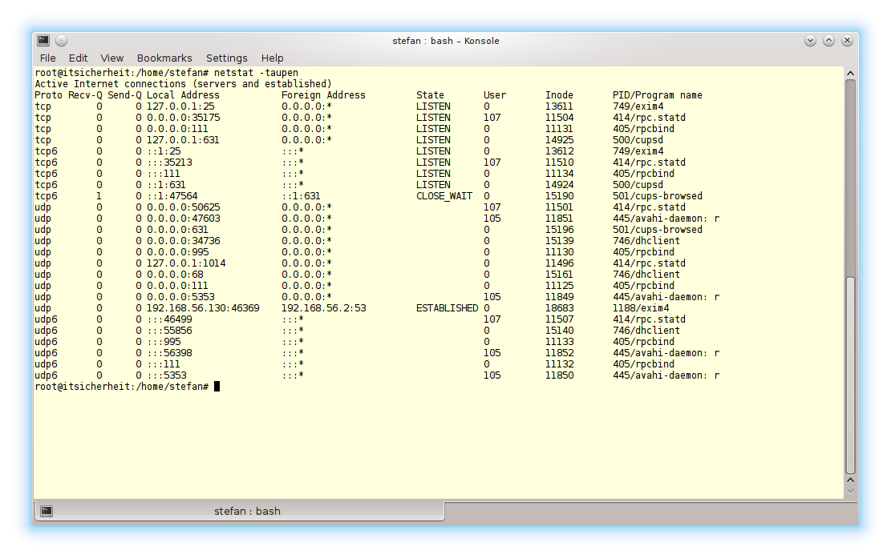
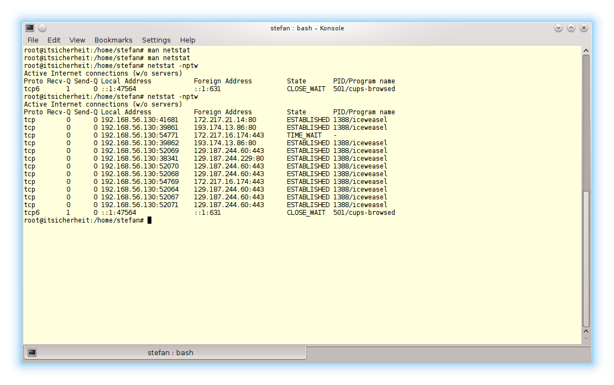

a)
Mit dem Befehl
netstat -taupen
können alle derzeit aktiven Prozesse anzeigen, die Verbindungen akzeptieren.

b)
Erneut können sich mit dem Tool netstat alle ausgehenden TCP-Verbindungen angezeigt werden:
netstat -nptw

Zurück zum Index